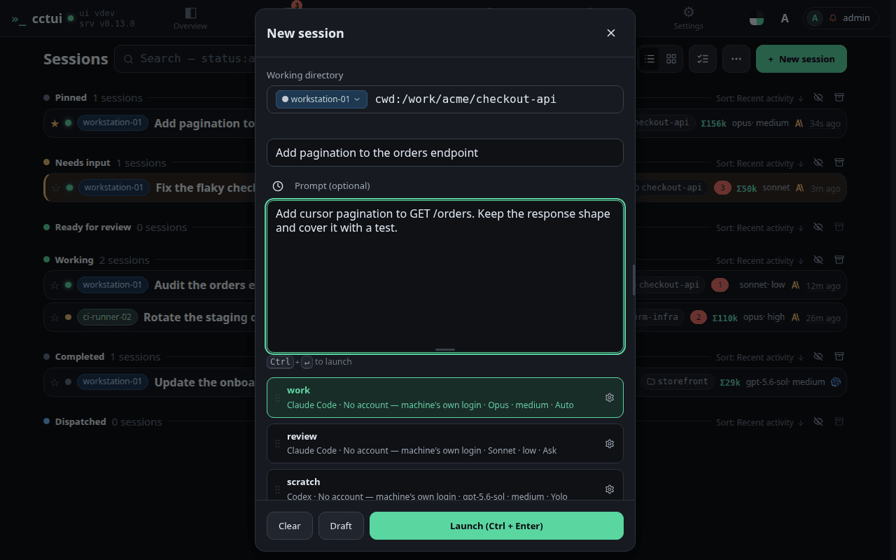
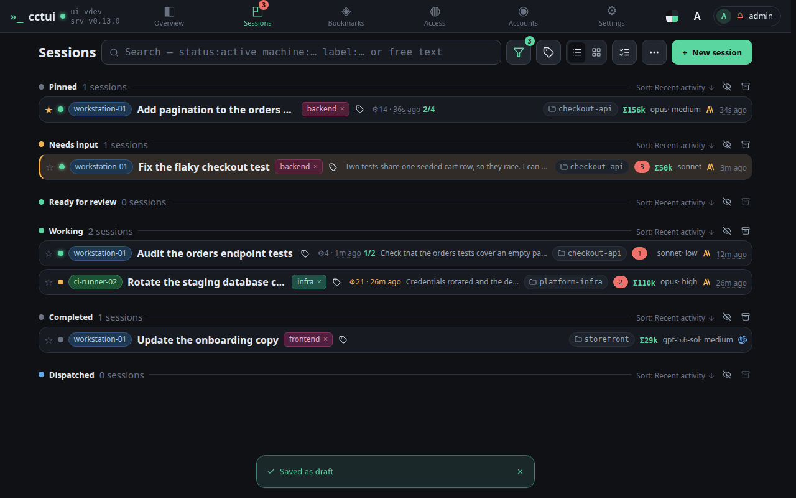
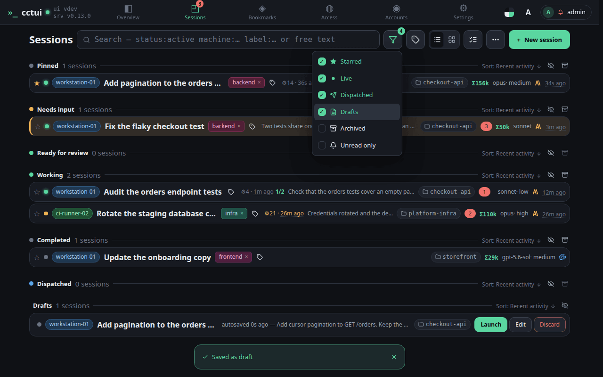
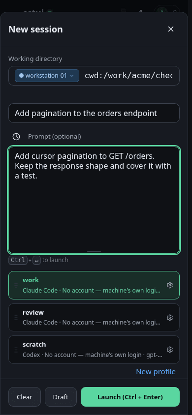
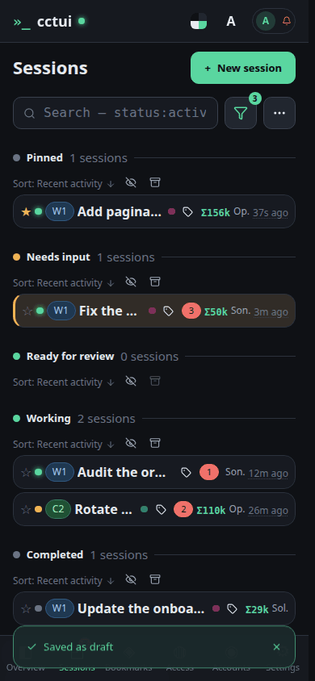
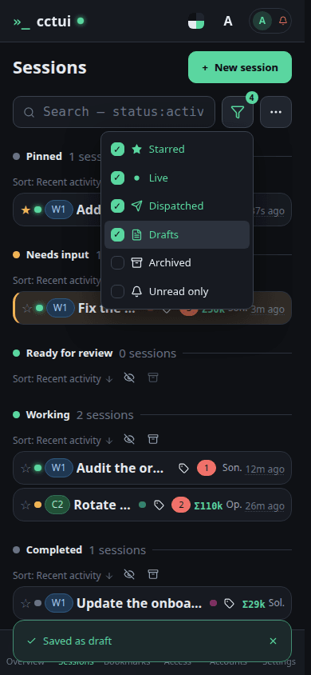

Open the new-session dialog Everything a run needs is in this one dialog: the machine, the folder, the prompt and the profile.Say what you want done Say what you want done. The profile below decides which harness and model carry it out.

The profile decides how it thinks A profile bundles the harness, model, reasoning effort and permission mode. Pick one here rather than setting four things every time you launch.

Save it as a draft The Draft button lights up once the machine and folder are set. This saves the run on your instance without starting it — nothing executes until you launch it.

The draft is waiting Your draft is here, holding the machine, folder, profile and prompt until you launch it.
viewport=mobile theme=dark
Open the new-session dialog Everything a run needs is in this one dialog: the machine, the folder, the prompt and the profile.Say what you want done Say what you want done. The profile below decides which harness and model carry it out.

The profile decides how it thinks A profile bundles the harness, model, reasoning effort and permission mode. Pick one here rather than setting four things every time you launch.

Save it as a draft The Draft button lights up once the machine and folder are set. This saves the run on your instance without starting it — nothing executes until you launch it.

The draft is waiting Your draft is here, holding the machine, folder, profile and prompt until you launch it.